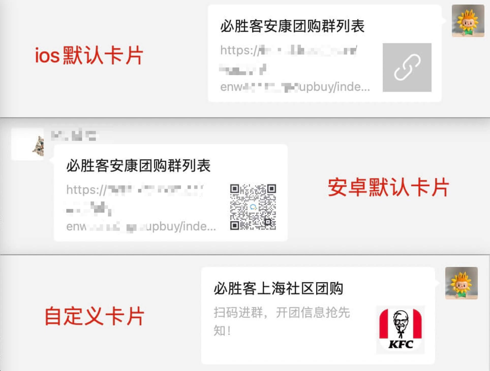

调研背景
其实在微信的群里，总能看到一些分享的微信卡片。
潜移默化之下以为这就是一个很容易的事情，
实际真正想要发链接的时候，只会发出来一串 url 的字符串，
经过调研之后，发现想要分享成微信卡片形式的话，发现还是很复杂的。
特此记录下来。
分享总结
- 分享朋友圈只能分享标题、图片，描述没办法带上（微信限制）
- 实现卡片分享的入口，必须是从微信公众号点击字符串链接进入，或者字符串转二维码后通过扫二维码进入。
单纯的点击微信聊天字符串链接，是无法分享出卡片的（微信限制） - 分享需要等页面加载 1 秒左右，需要完成微信的注册功能，自定义分享才能生效。
如果进入页面马上点分享就会分享成默认的。 - 只有公众号后台配置好域名才能实现分享卡片的功能。（公众号需要经过认证）
- 如果 link 字段绑定错误，微信分享卡片就会取默认分享文案，默认分享卡片规则如下：
- IOS 用户会取网页标题作为 title、网页 url 作为 desc、灰色兜底图片作为 imgUrl
- 安卓用户会取网页标题作为 title、网页 url 作为 desc、页面第一张图片作为 imgUrl
效果图
